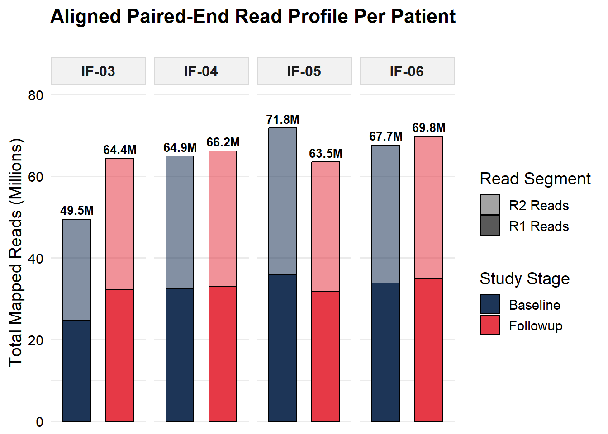
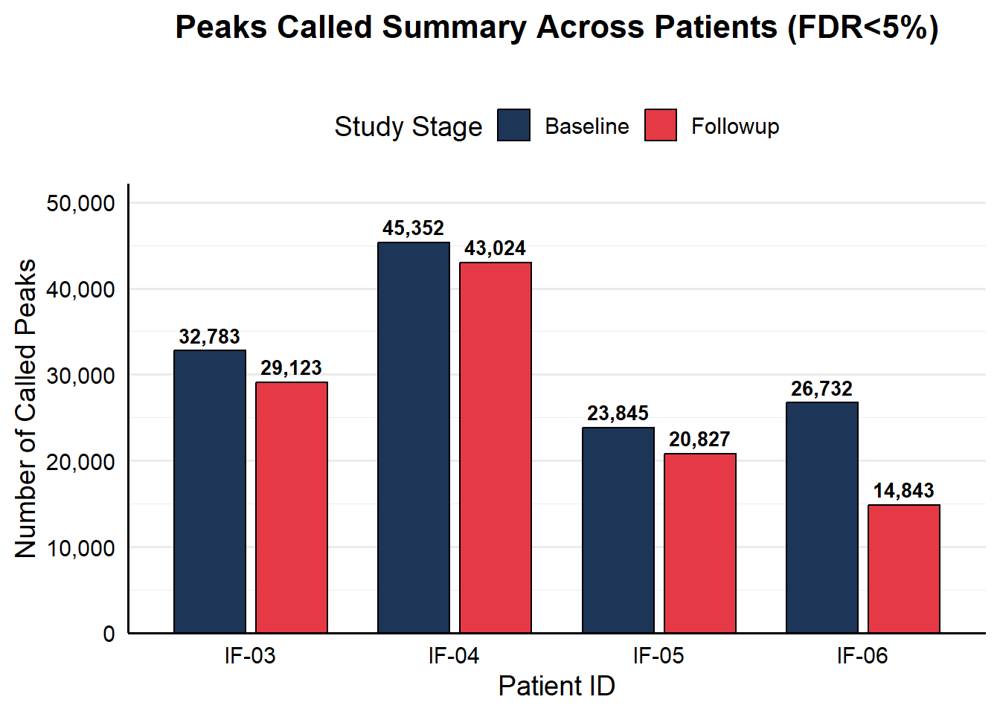

four patient samples
2026-06-15
Last updated: 2026-06-30
Checks: 6 1
Knit directory: BreastCancerEpigenetics/
This reproducible R Markdown analysis was created with workflowr (version 1.7.1). The Checks tab describes the reproducibility checks that were applied when the results were created. The Past versions tab lists the development history.
The R Markdown file has unstaged changes. To know which version of
the R Markdown file created these results, you’ll want to first commit
it to the Git repo. If you’re still working on the analysis, you can
ignore this warning. When you’re finished, you can run
wflow_publish to commit the R Markdown file and build the
HTML.
Great job! The global environment was empty. Objects defined in the global environment can affect the analysis in your R Markdown file in unknown ways. For reproduciblity it’s best to always run the code in an empty environment.
The command set.seed(20240919) was run prior to running
the code in the R Markdown file. Setting a seed ensures that any results
that rely on randomness, e.g. subsampling or permutations, are
reproducible.
Great job! Recording the operating system, R version, and package versions is critical for reproducibility.
Nice! There were no cached chunks for this analysis, so you can be confident that you successfully produced the results during this run.
Great job! Using relative paths to the files within your workflowr project makes it easier to run your code on other machines.
Great! You are using Git for version control. Tracking code development and connecting the code version to the results is critical for reproducibility.
The results in this page were generated with repository version 2622aa2. See the Past versions tab to see a history of the changes made to the R Markdown and HTML files.
Note that you need to be careful to ensure that all relevant files for
the analysis have been committed to Git prior to generating the results
(you can use wflow_publish or
wflow_git_commit). workflowr only checks the R Markdown
file, but you know if there are other scripts or data files that it
depends on. Below is the status of the Git repository when the results
were generated:
Ignored files:
Ignored: analysis/patient_complete_sequencing_profiles.png
Ignored: analysis/peaks_venn_diagram.png
Unstaged changes:
Modified: analysis/four_patient_samples.Rmd
Note that any generated files, e.g. HTML, png, CSS, etc., are not included in this status report because it is ok for generated content to have uncommitted changes.
These are the previous versions of the repository in which changes were
made to the R Markdown (analysis/four_patient_samples.Rmd)
and HTML (docs/four_patient_samples.html) files. If you’ve
configured a remote Git repository (see ?wflow_git_remote),
click on the hyperlinks in the table below to view the files as they
were in that past version.
| File | Version | Author | Date | Message |
|---|---|---|---|---|
| Rmd | 2622aa2 | han | 2026-06-15 | 6/15/2026 |
| html | 2622aa2 | han | 2026-06-15 | 6/15/2026 |
| Rmd | ce30505 | han | 2026-06-15 | 6/15/2026 |
| html | ce30505 | han | 2026-06-15 | 6/15/2026 |
rm(list=ls())
library(rprojroot)
library(dplyr)
root <- rprojroot::find_rstudio_root_file()reads number
FASTQ_File Total_Reads
-------------------------------------------------------
IF-03_Baseline_S65_R2_001.fastq.gz 35,432,588
IF-05_Followup_S70_R2_001.fastq.gz 34,241,541
IF-06_Baseline_S71_R2_001.fastq.gz 36,173,670
IF-06_Followup_S72_R2_001.fastq.gz 36,216,213
IF-03_Followup_S66_R2_001.fastq.gz 36,551,023
IF-04_Baseline_S67_R2_001.fastq.gz 37,207,749
IF-05_Baseline_S69_R2_001.fastq.gz 37,953,563
IF-04_Followup_S68_R2_001.fastq.gz 39,219,392
=======================================================
FASTQ_File Total_Reads
-------------------------------------------------------
IF-03_Followup_S66_R1_001.fastq.gz 36,551,023
IF-06_Baseline_S71_R1_001.fastq.gz 36,173,670
IF-03_Baseline_S65_R1_001.fastq.gz 35,432,588
IF-06_Followup_S72_R1_001.fastq.gz 36,216,213
IF-05_Followup_S70_R1_001.fastq.gz 34,241,541
IF-04_Baseline_S67_R1_001.fastq.gz 37,207,749
IF-05_Baseline_S69_R1_001.fastq.gz 37,953,563
IF-04_Followup_S68_R1_001.fastq.gz 39,219,392
Sample_ID Mapped_Reads Mapped_Fragments
-----------------------------------------------------------------------
IF-03_Baseline 49,479,369 24,739,684
IF-04_Baseline 64,926,012 32,463,006
IF-04_Followup 66,244,683 33,122,341
IF-05_Followup 63,532,220 31,766,110
IF-03_Followup 64,396,851 32,198,425
IF-06_Baseline 67,674,071 33,837,035
IF-06_Followup 69,807,294 34,903,647
IF-05_Baseline 71,810,494 35,905,247
=======================================================# Load required libraries
library(ggplot2)
library(tidyr)
library(dplyr)
# 1. Hardcode your exact metrics cleanly mapped out by timepoint
data <- data.frame(
Patient = c("IF-03", "IF-03", "IF-04", "IF-04", "IF-05", "IF-05", "IF-06", "IF-06"),
Timepoint = c("Baseline", "Followup", "Baseline", "Followup", "Baseline", "Followup", "Baseline", "Followup"),
Raw_R1 = c(35432588, 36551023, 37207749, 39219392, 37953563, 34241541, 36173670, 36216213),
Raw_R2 = c(35431588, 36551023, 37207749, 39219392, 37953563, 34241541, 36173670, 36216213),
Mapped_Reads = c(49479369, 64396851, 64926012, 66244683, 71810494, 63532220, 67674071, 69807294)
)
# 2. Reshape data into long format for ggplot group mapping
plot_data <- data %>%
pivot_longer(cols = c(Raw_R1, Raw_R2, Mapped_Reads),
names_to = "Pipeline_Step",
values_to = "Counts") %>%
mutate(
# Format Counts into Millions for elegant axis labels
Counts_Millions = Counts / 1e6,
# Standardize factors and clean titles for rows
Pipeline_Step = case_when(
Pipeline_Step == "Raw_R1" ~ "Raw R1 Reads (FASTQ)",
Pipeline_Step == "Raw_R2" ~ "Raw R2 Reads (FASTQ)",
Pipeline_Step == "Mapped_Reads" ~ "Successfully Mapped Reads (BAM)"
),
Pipeline_Step = factor(Pipeline_Step, levels = c("Raw R1 Reads (FASTQ)", "Raw R2 Reads (FASTQ)", "Successfully Mapped Reads (BAM)")),
Patient = factor(Patient, levels = c("IF-03", "IF-04", "IF-05", "IF-06")),
Timepoint = factor(Timepoint, levels = c("Baseline", "Followup"))
)
# 3. Create the final clean publication-ready bar chart
p <- ggplot(plot_data, aes(x = Patient, y = Counts_Millions, fill = Timepoint)) +
# Place bars right next to each other
geom_bar(stat = "identity", position = position_dodge(width = 0.8), width = 0.7, color = "black") +
# Professional High-Contrast Palette
scale_fill_manual(values = c("Baseline" = "#1d3557", "Followup" = "#e63946")) +
# Add specific decimal annotations right over the bar structures
geom_text(aes(label = sprintf("%.1fM", Counts_Millions)),
position = position_dodge(width = 0.8),
vjust = -0.4, size = 3, fontface = "bold") +
# Stack the metrics vertically into 3 clear operational tracking rows
facet_wrap(~Pipeline_Step, ncol = 1, scales = "free_y") +
# Extend breathing room at the top of the panels so numbers do not get cut off
scale_y_continuous(expand = expansion(mult = c(0, 0.2))) +
labs(
title = "Patient Sample Sequencing Metrics Profile",
subtitle = "",
x = "Patient Identifier",
y = "Read Counts (Millions)",
fill = "Study Stage"
) +
theme_minimal(base_size = 14) +
theme(
plot.title = element_text(face = "bold", size = 16, hjust = 0.5),
plot.subtitle = element_text(size = 12, hjust = 0.5, color = "gray25"),
strip.text = element_text(face = "bold", size = 11, color = "black"),
strip.background = element_rect(fill = "gray93", color = "gray80"),
panel.grid.major.x = element_blank(),
axis.text = element_text(color = "black"),
axis.line.x = element_line(color = "black"),
axis.line.y = element_line(color = "black"),
legend.position = "top"
)
p 
# 4. Save to image disk file
#ggsave("patient_complete_sequencing_profiles.png", plot = p, width = 9, height = 9, dpi = 300)
#cat("Success! Complete profile chart saved as 'patient_complete_sequencing_profiles.png'\n")mapped reads count
=======================================================
Sample_ID Mapped_R1 Mapped_R2 Total_Mapped
---------------------------------------------------------------------------------------
IF-03_Baseline 24,739,053 24,740,316 49,479,369
IF-04_Baseline 32,462,972 32,463,040 64,926,012
IF-04_Followup 33,121,436 33,123,247 66,244,683
IF-03_Followup 32,197,707 32,199,144 64,396,851
IF-05_Followup 31,759,284 31,772,936 63,532,220
IF-06_Baseline 33,836,467 33,837,604 67,674,071
IF-06_Followup 34,902,506 34,904,788 69,807,294
IF-05_Baseline 35,902,036 35,908,458 71,810,494
=======================================================# Load required libraries
library(ggplot2)
library(tidyr)
library(dplyr)
# 1. Create the dataset directly from your samtools output
data <- data.frame(
Sample_ID = c("IF-03_Baseline", "IF-04_Baseline", "IF-04_Followup", "IF-03_Followup",
"IF-05_Followup", "IF-06_Baseline", "IF-06_Followup", "IF-05_Baseline"),
Mapped_R1 = c(24739053, 32462972, 33121436, 32197707, 31759284, 33836467, 34902506, 35902036),
Mapped_R2 = c(24740316, 32463040, 33123247, 32199144, 31772936, 33837604, 34904788, 35908458)
)
# 2. Reshape and clean data for true vertical stacking
plot_data <- data %>%
separate(Sample_ID, into = c("Patient", "Timepoint"), sep = "_") %>%
pivot_longer(cols = c(Mapped_R1, Mapped_R2),
names_to = "Read_Pair",
values_to = "Counts") %>%
mutate(
Counts_Millions = Counts / 1e6,
Patient = factor(Patient, levels = c("IF-03", "IF-04", "IF-05", "IF-06")),
Timepoint = factor(Timepoint, levels = c("Baseline", "Followup")),
Read_Pair = case_when(
Read_Pair == "Mapped_R1" ~ "R1 Reads",
Read_Pair == "Mapped_R2" ~ "R2 Reads"
),
Read_Pair = factor(Read_Pair, levels = c("R2 Reads", "R1 Reads")) # R1 on bottom, R2 on top
)
# 3. Calculate total height labels for the top of each stack
total_labels <- plot_data %>%
group_by(Patient, Timepoint) %>%
summarise(Total_Millions = sum(Counts_Millions), .groups = 'drop')
# 4. Build the plot using Facet layout to force side-by-side patient groups
p <- ggplot() +
# position = "stack" works flawlessly here because Timepoint is the clear X axis
geom_bar(data = plot_data,
aes(x = Timepoint, y = Counts_Millions, fill = Timepoint, alpha = Read_Pair),
stat = "identity", position = "stack", width = 0.65, color = "black") +
# Distinct colors for Baseline vs Followup
scale_fill_manual(values = c("Baseline" = "#1d3557", "Followup" = "#e63946")) +
# Shading modifier to visually split R1 and R2 vertically
scale_alpha_manual(values = c("R1 Reads" = 1.0, "R2 Reads" = 0.55), name = "Read Segment") +
# Add total text labels perfectly over the vertical stacks
geom_text(data = total_labels,
aes(x = Timepoint, y = Total_Millions, label = sprintf("%.1fM", Total_Millions)),
vjust = -0.5, size = 3.5, fontface = "bold") +
# Group patients side-by-side horizontally using 1 row
facet_wrap(~ Patient, nrow = 1) +
# Extra space at the top of the panels so labels don't clip
scale_y_continuous(expand = expansion(mult = c(0, 0.15))) +
labs(
title = "Aligned Paired-End Read Profile Per Patient",
subtitle = "",
x = NULL,
y = "Total Mapped Reads (Millions)",
fill = "Study Stage"
) +
theme_minimal(base_size = 14) +
theme(
plot.title = element_text(face = "bold", size = 16, hjust = 0.5),
plot.subtitle = element_text(size = 12, hjust = 0.5, color = "gray25"),
strip.text = element_text(face = "bold", size = 12), # Patient Panel headers
strip.background = element_rect(fill = "gray95", color = "gray85"),
axis.text = element_text(color = "black"),
axis.text.x = element_blank(),
axis.ticks.x = element_blank(),
panel.grid.major.x = element_blank(),
legend.position = "right",
legend.box = "vertical"
)
p
| Version | Author | Date |
|---|---|---|
| 2622aa2 | han | 2026-06-15 |
# Load required libraries
library(ggplot2)
library(tidyr)
library(dplyr)
############## peak windows with FDR 5%, -q 0.05
#wc -l step_03_parallel_peak_calling_results/*narrowPeak
# 32783 step_03_parallel_peak_calling_results/IF-03_Baseline_peaks.narrowPeak
# 29123 step_03_parallel_peak_calling_results/IF-03_Followup_peaks.narrowPeak
# 45352 step_03_parallel_peak_calling_results/IF-04_Baseline_peaks.narrowPeak
# 43024 step_03_parallel_peak_calling_results/IF-04_Followup_peaks.narrowPeak
# 23845 step_03_parallel_peak_calling_results/IF-05_Baseline_peaks.narrowPeak
# 20827 step_03_parallel_peak_calling_results/IF-05_Followup_peaks.narrowPeak
# 26732 step_03_parallel_peak_calling_results/IF-06_Baseline_peaks.narrowPeak
# 14843 step_03_parallel_peak_calling_results/IF-06_Followup_peaks.narrowPeak
# 1. Create the dataset directly from your MACS2 narrowPeak line counts
peak_data <- data.frame(
Sample_ID = c("IF-03_Baseline", "IF-03_Followup",
"IF-04_Baseline", "IF-04_Followup",
"IF-05_Baseline", "IF-05_Followup",
"IF-06_Baseline", "IF-06_Followup"),
Peaks_Called = c(32783, 29123, 45352, 43024, 23845, 20827, 26732, 14843)
)
# 2. Reshape and organize data for side-by-side layout
plot_data <- peak_data %>%
separate(Sample_ID, into = c("Patient", "Timepoint"), sep = "_") %>%
mutate(
Patient = factor(Patient, levels = c("IF-03", "IF-04", "IF-05", "IF-06")),
Timepoint = factor(Timepoint, levels = c("Baseline", "Followup"))
)
# 3. Build the side-by-side grouped bar chart
p <- ggplot(plot_data, aes(x = Patient, y = Peaks_Called, fill = Timepoint)) +
# position = "dodge" places Baseline and Followup right next to each other
geom_bar(stat = "identity", position = position_dodge(width = 0.8), width = 0.7, color = "black") +
# Keeping your consistent color scheme (Dark Blue vs. Red-Coral)
scale_fill_manual(values = c("Baseline" = "#1d3557", "Followup" = "#e63946")) +
# Add exact peak count labels nicely formatted with commas above each bar
geom_text(aes(label = scales::comma(Peaks_Called)),
position = position_dodge(width = 0.8),
vjust = -0.5, size = 3.5, fontface = "bold") +
# Extend the top of the Y-axis so the text labels don't get clipped
scale_y_continuous(labels = scales::comma, expand = expansion(mult = c(0, 0.15))) +
# Titles and Axis Labels
labs(
title = "Peaks Called Summary Across Patients (FDR<5%)",
subtitle = "",
x = "Patient ID",
y = "Number of Called Peaks",
fill = "Study Stage"
) +
# Sleek publicaton-ready theme
theme_minimal(base_size = 14) +
theme(
plot.title = element_text(face = "bold", size = 16, hjust = 0.5),
plot.subtitle = element_text(size = 12, hjust = 0.5, color = "gray25"),
axis.text = element_text(color = "black"),
axis.line.x = element_line(color = "black"),
axis.line.y = element_line(color = "black"),
panel.grid.major.x = element_blank(), # Remove distracting vertical lines
legend.position = "top"
)
p
# 1. Install/Load required packages
# If you don't have rtracklayer, run: BiocManager::install("rtracklayer")
library(rtracklayer)
library(dplyr)
library(purrr)
# 2. Define directory path and locate your files
# Change this to "." if the script is in the exact same folder as the files
peak_dir <- "C:\\han\\Projects\\2025_03_breast_cancer\\h3k27ac\\4_patient_peaks\\"
peak_files <- list.files(
path = peak_dir,
pattern = "_peaks\\.narrowPeak$",
full.names = TRUE
)
# 3. Create clean names for your list entries (e.g., "IF-03_Baseline")
sample_names <- list.files(path = peak_dir, pattern = "_peaks\\.narrowPeak$") %>%
gsub("_peaks\\.narrowPeak", "", .)
# Name the file vector so the resulting list retains the sample IDs
names(peak_files) <- sample_names
# 4. Import all files into a structured list of GRanges objects
cat("Reading peak files into genomic ranges...\n")Reading peak files into genomic ranges...peaks_list <- map(peak_files, ~ import(.x, format = "narrowPeak"))
# 5. Quick Verification Check
cat("\n--- Peak Import Summary ---\n")
--- Peak Import Summary ---iwalk(peaks_list, ~ cat(.y, ": loaded", length(.x), "peak windows.\n"))IF-03_Baseline : loaded 32783 peak windows.
IF-03_Followup : loaded 29123 peak windows.
IF-04_Baseline : loaded 45352 peak windows.
IF-04_Followup : loaded 43024 peak windows.
IF-05_Baseline : loaded 23845 peak windows.
IF-05_Followup : loaded 20827 peak windows.
IF-06_Baseline : loaded 26732 peak windows.
IF-06_Followup : loaded 14843 peak windows.# Example: How to access a specific sample's peaks
# head(peaks_list[["IF-03_Baseline"]])library(rtracklayer)
library(GenomicRanges)
library(ggVennDiagram)
library(ggplot2)
sample_names <- c("IF03_BL", "IF03_FU", "IF04_BL", "IF04_FU",
"IF05_BL", "IF05_FU", "IF06_BL", "IF06_FU")
names(peak_files) <- sample_names
# 3. Read files into GRanges lists
cat("Importing narrowPeak files...\n")Importing narrowPeak files...gr_list <- lapply(peak_files, function(x) import(x, format = "narrowPeak"))
# 4. Filter for high-confidence peaks using native R looping (Prevents structure corruption)
p_cutoff_log10 <- -log10(0.05)
cat("Filtering individual sample peaks for p-value <= 0.05...\n")Filtering individual sample peaks for p-value <= 0.05...filtered_gr_list <- list()
for (name in sample_names) {
current_gr <- gr_list[[name]]
# Filter strictly using native GRanges subsetting
filtered_gr_list[[name]] <- current_gr[mcols(current_gr)$pValue >= p_cutoff_log10]
}
# 5. Combine the 4 Baseline samples together and the 4 Follow-up samples together
cat("Merging condition groups into unified Baseline and Follow-up peak sets...\n")Merging condition groups into unified Baseline and Follow-up peak sets...# Use BiocGenerics::append or explicit c() on clean GRanges components
baseline_stacked <- c(
filtered_gr_list[["IF03_BL"]],
filtered_gr_list[["IF04_BL"]],
filtered_gr_list[["IF05_BL"]],
filtered_gr_list[["IF06_BL"]]
)
baseline_combined <- GenomicRanges::reduce(baseline_stacked)
followup_stacked <- c(
filtered_gr_list[["IF03_FU"]],
filtered_gr_list[["IF04_FU"]],
filtered_gr_list[["IF05_FU"]],
filtered_gr_list[["IF06_FU"]]
)
followup_combined <- GenomicRanges::reduce(followup_stacked)
# 6. Generate an absolute master list of unique windows across both conditions
master_consensus <- GenomicRanges::reduce(c(baseline_combined, followup_combined))
cat("Total master peak windows identified:", length(master_consensus), "\n")Total master peak windows identified: 66129 # 1. Install and Load the ggvenn package
# install.packages("ggvenn")
library(ggvenn)
# 7. Map windows back to find unique vs overlapping regions with a >100bp condition
cat("Calculating overlaps with a strict >100bp minimum length requirement...\n")Calculating overlaps with a strict >100bp minimum length requirement...cutoff=500
# findOverlaps with minoverlap handles the length constraint natively at the genomic layer
baseline_overlaps <- findOverlaps(master_consensus, baseline_combined, minoverlap = cutoff)
followup_overlaps <- findOverlaps(master_consensus, followup_combined, minoverlap = cutoff)
# Extract the master consensus peak index IDs that match the criteria
baseline_ids <- unique(queryHits(baseline_overlaps))
followup_ids <- unique(queryHits(followup_overlaps))
# Structure the input data into a clean two-group named list
venn_data <- list(
"Baseline Peaks" = baseline_ids,
"Follow-up Peaks" = followup_ids
)
# 8. Generate and save the horizontal side-by-side Venn Diagram
cat("Plotting horizontal Venn Diagram...\n")Plotting horizontal Venn Diagram...p <- ggvenn(
venn_data,
fill_color = c("#c7e9b4", "#f07167"), # Left circle: Soft Mint | Right circle: Soft Coral
stroke_size = 1.0, # Circle border thickness
set_name_size = 5, # Text size for "Baseline Peaks" and "Follow-up Peaks"
text_size = 5 # Text size for counts inside circles
) +
labs(
title = "Chromatin Accessibility Window Comparison",
subtitle = "Venn Diagram: Peaks Passing 5% FDR Cutoff (>500bp Overlap Required)"
) +
theme(
plot.title = element_text(face = "bold", size = 16, hjust = 0.5, margin = margin(b = 5)),
plot.subtitle = element_text(size = 11, hjust = 0.5, color = "gray30", margin = margin(b = 15))
)
# Render the plot horizontally to your Viewer
print(p)
sessionInfo()R version 4.4.0 (2024-04-24 ucrt)
Platform: x86_64-w64-mingw32/x64
Running under: Windows 11 x64 (build 26200)
Matrix products: default
locale:
[1] LC_COLLATE=English_United States.utf8
[2] LC_CTYPE=English_United States.utf8
[3] LC_MONETARY=English_United States.utf8
[4] LC_NUMERIC=C
[5] LC_TIME=English_United States.utf8
time zone: America/Chicago
tzcode source: internal
attached base packages:
[1] grid stats4 stats graphics grDevices utils datasets
[8] methods base
other attached packages:
[1] ggvenn_0.1.10 ggVennDiagram_1.5.7 purrr_1.0.2
[4] rtracklayer_1.64.0 GenomicRanges_1.56.2 GenomeInfoDb_1.40.0
[7] IRanges_2.38.0 S4Vectors_0.42.0 BiocGenerics_0.50.0
[10] tidyr_1.3.1 ggplot2_3.5.1 dplyr_1.1.4
[13] rprojroot_2.0.4
loaded via a namespace (and not attached):
[1] SummarizedExperiment_1.34.0 gtable_0.3.5
[3] rjson_0.2.23 xfun_0.43
[5] bslib_0.7.0 lattice_0.22-6
[7] Biobase_2.64.0 vctrs_0.6.5
[9] tools_4.4.0 bitops_1.0-7
[11] generics_0.1.3 parallel_4.4.0
[13] curl_5.2.1 tibble_3.2.1
[15] fansi_1.0.6 highr_0.10
[17] pkgconfig_2.0.3 Matrix_1.7-0
[19] lifecycle_1.0.4 GenomeInfoDbData_1.2.12
[21] compiler_4.4.0 farver_2.1.2
[23] stringr_1.5.1 git2r_0.33.0
[25] Rsamtools_2.20.0 Biostrings_2.72.0
[27] munsell_0.5.1 codetools_0.2-20
[29] httpuv_1.6.15 htmltools_0.5.8.1
[31] sass_0.4.9 RCurl_1.98-1.16
[33] yaml_2.3.8 crayon_1.5.2
[35] later_1.3.2 pillar_1.9.0
[37] jquerylib_0.1.4 whisker_0.4.1
[39] BiocParallel_1.38.0 DelayedArray_0.30.1
[41] cachem_1.0.8 abind_1.4-5
[43] tidyselect_1.2.1 digest_0.6.35
[45] stringi_1.8.4 restfulr_0.0.16
[47] labeling_0.4.3 fastmap_1.1.1
[49] SparseArray_1.4.8 colorspace_2.1-0
[51] cli_3.6.2 magrittr_2.0.3
[53] S4Arrays_1.4.1 XML_3.99-0.20
[55] utf8_1.2.4 withr_3.0.0
[57] scales_1.3.0 UCSC.utils_1.0.0
[59] promises_1.3.0 rmarkdown_2.26
[61] XVector_0.44.0 httr_1.4.7
[63] matrixStats_1.3.0 workflowr_1.7.1
[65] evaluate_0.23 knitr_1.46
[67] BiocIO_1.14.0 rlang_1.1.3
[69] Rcpp_1.0.12 glue_1.7.0
[71] rstudioapi_0.16.0 jsonlite_1.8.8
[73] R6_2.5.1 MatrixGenerics_1.16.0
[75] GenomicAlignments_1.40.0 fs_1.6.4
[77] zlibbioc_1.50.0